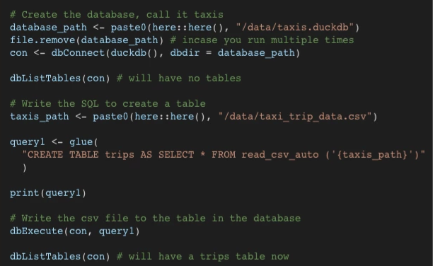

DuckDB
Misc
- Also see
- Packages
- Resources
- Awesome DuckDB - Curated list of libraries, tools, and resources.
- Cooking with DuckDB - hrbrmstr’s recipes
- Advent of SQL with DuckDB and R (2024)
- JSON and XML data manipulation
- Spatial queries
- Time series analysis
- Recursive CTEs
- Window functions
- and more (24 days worth)
- DuckDB and dplyr and ibis
- R examples use a DBI connects
- Tools
DuckDB UI (Overview)
- Upper Left Panel: A list of in-memory databases plus any files and URLs you’ve loaded
- Lower Left Panel: A summary of any db clicked-on in the upper left panel — the number of rows, the name and type of each column, and a profile of the data in each column.
- Select a column to see a more detailed summary of its data
- The “Preview data†button (right of magnifying glass) allow you to inspect the first 100 rows
- Middle: A notebook style coding environment where you run DuckDB SQL in cells and see the results underneath
- Each cell of the notebook can execute one or more SQL statements.
- You can run the whole cell, or just a selection, then sort (clicking columns names?), filter (bottom-left), or further transform the results using the provided controls.
- Right Panel: Column Explorer
- Columns are displayed. Clicking on a column triggers a dropdown that shows descriptive statistices
- e.g. type looks like a categorical and its dropdown shows counts and percentage of the total rows. {arrival}{.var-text} is a date/time variable and its dropdown shows a time series chart.
- A numeric column’s dropdown shows summary statistics, e.g. mean, s.d., max, min, quantiles, etc. and a histogram.
- Columns are displayed. Clicking on a column triggers a dropdown that shows descriptive statistices
Starting the UI
CLI
duckdb -uiR
library(duckdb) con <- dbConnect(duckdb()) # Install and load the UI extension dbExecute(con, "INSTALL ui;") dbExecute(con, "CALL start_ui();")
SQL Workbench - Query parquet files locally or remotely. Can also produce charts of results. Uses DuckDB-WASM so browser based.
- Tutorial - Along with explaining the features of the tool, it has complete normalization example and analysis.
- For visualizations, click the configure button on the right side of the Results sections (bottom main), click Data Grid, choose a chart type, drag column names from the bottom to various areas (similar to Tableau). Click the Reset button in the toolbar close to the configure button to return to Table mode.
- For tables, if you right-click their name in the Schema pane (far-left), you get a list of options including Summarize which gives summary stats along with uniques and null % for missing data.
- If tables have foreign keys, data models can be visualized in a mermaid diagram by clicking Data Modes in the bottom-left of the schema panel
DuckDB + AWS Lambda for distributed computing and reducing Snowflake costs (article)
- High performance embedded database for analytics which provides a few enhancements over SQLite such as increased speed and allowing a larger number of columns
- Represents a massive leap forward from CSV-based files for a range of reasons, not least the fact it encodes schema metadata (column names and data types) and adopts columnar storage which enables effective compression of data.
- Column storage is optimal for analytics since only certain columns are typically required in a query.
- Faster than sqlite for most analytics queries (sums, aggregates etc).
- Vectorizes query executions (columnar-oriented), while other DBMSs (SQLite, PostgreSQL…) process each row sequentially
- DuckDB’s memory usage is more optimal for analytics
- DuckDB only loads vectorized columns of data it needs to process at a given moment (i.e. lazy loading), which helps manage memory efficiently.
- If your data exceeds available RAM, DuckDB will intelligently manage memory and use disk as needed, though this might result in slower performance compared to fully in-memory operations
- Relational DBs (e.g. Postgres) bring row-based data pages into memory using a caching mechanism.
- When a query accesses data, it retrieves entire data pages (which may include rows you don’t need) into the cache. These pages are stored in memory to avoid repeated disk access.
- This method can handle large datasets, the process may involve more disk I/O and memory consumption due to the nature of page-level data loading.
- DuckDB only loads vectorized columns of data it needs to process at a given moment (i.e. lazy loading), which helps manage memory efficiently.
- DuckDB extensions are a single entry point to the broader data ecosystem. Users no longer need to install a separate extension to access data in Iceberg and another separate extension for S3. DuckDB can handle all of that for you. It allows organizations to gain high-performance analytics without needing an expensive data warehouse.
- Negligible performance overhead when converting to python or R objects thanks to DuckDB’s zero-copy integration.
- Limitations
- Files are “write once†— they are not designed for updates - if you want to update the data you need to re-write the file. Appending data works (just add a file with the new rows and leverage globbing), but deletes require more complex workarounds.
- Schema evolution and enforcement are problematic and typically requires data to be re-written.
- Time travel and ACID principles become extremely difficult. (i.e. properties that make concurrent execution of multiple transactions without conflict.)
- Unlike some other big data tools it is entirely self-contained. (aka embedded, in-process)
- No external dependencies, or server software to install, update, or maintain
- Can directly run queries on Parquet files, CSV files, SQLite files, postgres files, Pandas, R and Julia data frames as well as Apache Arrow sources
{kind=link}
Set-up
- Installation:
install.packages("duckdb") - Check version:
duckdb:::sql("SELECT version()") - Create db and populate table from csv
Example 
Example
# includes filename/id withr::with_dir("data-raw/files/", { dbSendQuery( con, " CREATE TABLE files AS SELECT *, regexp_extract(filename, '\\d{7}') AS file_number FROM read_csv_auto('*Control*File-*.txt', FILENAME = TRUE);" ) })
CLI
Start interactive shell:
duckdbStart interactive shell on database file:
duckdb path\to\fileQuery csv, json, or parquet file directly
duckdb -c "SELECT * FROM 'data_source.[csv|csv.gz|json|json.gz|parqet]'"Run SQL script:
duckdb -c ".read path\to\script.sql"
dbplyr
Example 1: Read and Query Parquet
library(duckdb) library(dplyr) library(dbplyr) conn <- DBI::dbConnect( duckdb::duckdb(), dbdir = ":memory:" ) DBI::dbExecute(conn, "SET memory_limit = '5GB';") tbl_db_fsq <- tbl( conn, "read_parquet('/Users/tbats/Documents/R/Data/foursquare-spaces/*.parquet')" ) tib_fsq <- tbl_db_fsq |> select(name, fsq_category_labels, locality, region, address, latitude, longitude, geom, bbox) |> filter(locality == 'Louisville' & region == 'KY') |> collect() |> tidyr::unnest_auto(fsq_category_labels) |> filter(stringr::str_detect(fsq_category_labels, "Car Dealership")) |> distinct(name, .keep_all = TRUE)- fsq_category_labels is a list column with either 1 or more (only saw at most 2) elements
- For other methods of performing this query, see
- SQL >> Example 1, Example 2
- Apache, Arrow >> Queries >> Example: Collect Then Wrangle List Column
- Query doesn’t try to blow up RAM. The only memory used with the resultant dataframe.
Example 2: Read CSV in Parallel, Summarize
con <- dbConnect(duckdb(), ":memory:") df <- dplyr::tbl(con, paste0("read_csv('", file_name, "', parallel = true, delim = ',', header = true, columns = { 'measurement': 'DOUBLE', 'state': 'VARCHAR' })"), check_from = FALSE) df <- df |> summarize( .by = state, mean = mean(measurement), min = min(measurement), max = max(measurement) ) |> collect() dbDisconnect(con, shutdown = TRUE)- Competative with running the operation in SQL
Example 3: Connect to db; Write a df to table; Query it
library(dbplyr) duck <- DBI::dbConnect(duckdb::duckdb(), dbdir="duck.db", read_only=FALSE) DBI::dbWriteTable(duck, name = "sales", value = sales) sales_duck <- tbl(duck, "sales") sales_duck %>% group_by(year, SKU) %>% mutate(pos_sales = case_when( sales_units > 0 ~ sales_units, TRUE ~ 0)) %>% summarize(total_revenue = sum(sales_units * item_price_eur), max_order_price = max(pos_sales * item_price_eur), avg_price_SKU = mean(item_price_eur), items_sold = n()) DBI::dbDisconnect(duck)
duckplyr
Misc
- {duckplyr} - {dplyr}-compatible API
- Currently supported base functions, dplyr verbs, operations, etc. (docs)
- Use
unsupportedto print out unsupported dplyr verbs - Supported dplyr verbs
- Use
- Using
library(duckplyr)will overwrite all {dplyr} verbs to the duckplyr versionsmethods_restorewill return verbs to standard dplyr functions
- Geospatial data isn’t currently supported in duckplyr while duckdb handles them just fine.
The blob (Binary Large OBject) type represents an arbitrary binary object stored in the database system. The blob type can contain any type of binary data with no restrictions. What the actual bytes represent is opaque to the database system.
- I think this is how geospatial columns are stored in parquet
I tried to read a set of parquet files with a geometry column and got this error
Error in `rel_to_df()`: ! rel_to_altrep: Unknown column type for altrep: BLOB- See this issue for more details
- Working with {dbplyr}
- Both operations work without intermediate materialization
- duckplyr to dbplyr: use
as_tblyou to convert a duckplyr tibble to a dbplyr lazy table.- This allows you to seamlessly interact with existing code that might use inline SQL or other dbplyr functionality.
- dbplyr to duckplyr: use
as_duckdb_tibbleyou can convert a dbplyr lazy table to a duckplyr tibble.
Memory Management
Set memory limits for duckdb
read_sql_duckdb("SELECT current_setting('memory_limit') AS memlimit") #> # A duckplyr data frame: 1 variable #> memlimit #> <chr> #> 1 12.4 GiB db_exec("PRAGMA memory_limit = '1GB'") read_sql_duckdb("SELECT current_setting('memory_limit') AS memlimit") #> # A duckplyr data frame: 1 variable #> memlimit #> <chr> #> 1 953.6 MiB- Computations carried out by DuckDB allocate RAM in the context of the R process. This memory separate from the memory used by R objects, and is managed by DuckDB.
- See the DuckDB documentation for other configuration options
Any dataframe with class, “duckplyr_df†is lazy (i.e. not in memory)
Use
compute()to run the query and save the results as a duckplyr frame in a temporary table in the duckdb database- Use to materialize any intermediate result that is too large to fit into memory
- The return value of the function is a duckplyr frame that can be used in further computations.
- Since it’s in a temporary table, the data is not persisted after the session ends.
- There’s also
compute_parquet,compute_csv
Use
collect()to retrieve the results to R and returns a plain tibble.- Use for the final result or write to file if still too large.
Some dpylr verbs, e.g.
group_by, are not supported. If used, data will be read into memory. (aka a Fallback)- .by arguments are supported though even if
group_byis not - To make fallbacks verbose, set
fallback_config(info = TRUE)
- .by arguments are supported though even if
Prudence Levels (e.g.
as_duckdb_tibble(prudence = "stingy"))“lavish†(careless about resources): Always automatically materialize.
- For small to medium datasets
- The underlying DuckDB computation is carried out upon the first request. (See Triggers in “stingy†section)
- Once the results are computed, they are cached and subsequent requests are fast.
- Default for
duckdb_tibbleandas_duckdb_tibble
“stingy†(avoid spending at all cost): Never automatically materialize, throw an error when attempting to access the data.
For large datasets
Accessing a column or requesting the number of rows triggers an error.
Results can be materialized explicitly via
collectand other functionsNon-Triggers: Printing the dataframe,
class,names, etc.Triggers
nrow(flights_stingy) #> Error: Materialization is disabled, use collect() or as_tibble() to materialize. flights_stingy[[1]] #> Error: Materialization is disabled, use collect() or as_tibble() to materialize. flights_stingy |> group_by(origin) |> summarize(n = n()) |> ungroup() #> Error in `group_by()`: #> ! This operation cannot be carried out by DuckDB, and the input is #> a stingy duckplyr frame. #> • Try `summarise(.by = ...)` or `mutate(.by = ...)` instead of #> `group_by()` and `ungroup()`. #> ℹ Use `compute(prudence = "lavish")` to materialize to temporary storage #> and continue with duckplyr.
“thrifty†(use resources wisely): Only automaticaly materialize the data if it is small, otherwise throw an error.
- Data is materialized only if the result has fewer than 1,000,000 cells (rows multiplied by columns). (e.g. 4 columns * 250,001 rows)
- Default for
read_parquet_duckdb
Converting from one prudence level to the other
flights_stingy |> as_duckdb_tibble(prudence = "lavish")
Operations
Read files (not in memory)
dat_duck <- read_parquet_duckdb("flights.parquet") dat_duck <- read_csv_duckdb("Data8277.csv") dat_duck <- read_csv_duckdb(c(path_csv_1, path_csv_2))- Detects the schemas
- Creates placeholder objects
Write data
duckdb_tibble(a = 1) |> mutate(b = 2) |> compute_csv(path_csv_out)compute_parquetalso available
Optimization
I think the query plans go from bottom to top in explaining a chain from top to bottom.
Show query plan with
explainlibrary("duckplyr") as_duckplyr_df(data.frame(n=1:10)) |> mutate(m = n + 1) |> filter (m > 5) |> count() |> explain() #> ┌───────────────────────────┠#> │ PROJECTION │ #> │ ─ ─ ─ ─ ─ ─ ─ ─ ─ ─ ─ │ #> │ n │ #> └─────────────┬─────────────┘ #> ┌─────────────┴─────────────┠#> │ UNGROUPED_AGGREGATE │ #> │ ─ ─ ─ ─ ─ ─ ─ ─ ─ ─ ─ │ #> │ count_star() │ #> └─────────────┬─────────────┘ #> ┌─────────────┴─────────────┠#> │ FILTER │ #> │ ─ ─ ─ ─ ─ ─ ─ ─ ─ ─ ─ │ #> │(+(CAST(n AS DOUBLE), 1.0) │ #> │ > 5.0) │ #> │ ─ ─ ─ ─ ─ ─ ─ ─ ─ ─ ─ │ #> │ EC: 10 │ #> └─────────────┬─────────────┘ #> ┌─────────────┴─────────────┠#> │ R_DATAFRAME_SCAN │ #> │ ─ ─ ─ ─ ─ ─ ─ ─ ─ ─ ─ │ #> │ data.frame │ #> │ ─ ─ ─ ─ ─ ─ ─ ─ ─ ─ ─ │ #> │ n │ #> │ ─ ─ ─ ─ ─ ─ ─ ─ ─ ─ ─ │ #> │ EC: 10 │ #> └───────────────────────────┘- Query plan consists of a scan, a filter, projections and an aggregate.
Expressions that aren’t support won’t have “Projection†in the query plan
as_duckplyr_df(data.frame(n=1:10)) |> mutate(m=(\(x) x+1)(n)) |> explain() #> ┌───────────────────────────┠#> │ R_DATAFRAME_SCAN │ #> │ ─ ─ ─ ─ ─ ─ ─ ─ ─ ─ ─ │ #> │ data.frame │ #> │ ─ ─ ─ ─ ─ ─ ─ ─ ─ ─ ─ │ #> │ n │ #> │ m │ #> │ ─ ─ ─ ─ ─ ─ ─ ─ ─ ─ ─ │ #> │ EC: 10 │ #> └───────────────────────────┘- The translation of the anonymous function failed which caused it to fallback to the computation happening in the R engine.
- There will usually be a performance hit from the fallback due to – for example – the lack of automatic parallelization
Apache Arrow
to_duckdb()andto_arrow(): Converts between using {arrow} engine and {duckdb} engieg in workflow without paying any cost to (re)serialize the data when you pass it back and forth- Useful in cases where something is supported in one of Arrow or DuckDB but not the other
Benefits
- Utilization of a parallel vectorized execution engine without requiring any extra data copying
- Larger Than Memory Analysis: Since both libraries support streaming query results, we are capable of executing on data without fully loading it from disk. Instead, we can execute one batch at a time. This allows us to execute queries on data that is bigger than memory.
- Complex Data Types: DuckDB can efficiently process complex data types that can be stored in Arrow vectors, including arbitrarily nested structs, lists, and maps.
- Advanced Optimizer: DuckDB’s state-of-the-art optimizer can push down filters and projections directly into Arrow scans. As a result, only relevant columns and partitions will be read, allowing the system to e.g., take advantage of partition elimination in Parquet files. This significantly accelerates query execution.
Example (using a SQL Query; method 1)
# open dataset ds <- arrow::open_dataset(dir_out, partitioning = "species") # open connection to DuckDB con <- dbConnect(duckdb::duckdb()) # register the dataset as a DuckDB table, and give it a name duckdb::duckdb_register_arrow(con, "my_table", ds) # query dbGetQuery(con, " SELECT sepal_length, COUNT(*) AS n FROM my_table WHERE species = 'species=setosa' GROUP BY sepal_length ") # clean up duckdb_unregister(con, "my_table") dbDisconnect(con)- filtering using a partition, the WHERE format is ‘<partition_variable>=<partition_value>’
Example (using SQL Query; method 2)
library(duckdb) library(arrow) library(dplyr) # Reads Parquet File to an Arrow Table arrow_table <- arrow::read_parquet("integers.parquet", as_data_frame = FALSE) # Gets Database Connection con <- dbConnect(duckdb::duckdb()) # Registers arrow table as a DuckDB view arrow::to_duckdb(arrow_table, table_name = "arrow_table", con = con) # we can run a SQL query on this and print the result print(dbGetQuery(con, "SELECT SUM(data) FROM arrow_table WHERE data > 50")) # Transforms Query Result from DuckDB to Arrow Table result <- dbSendQuery(con, "SELECT * FROM arrow_table")Example (using dplyr)
library(duckdb) library(arrow) library(dplyr) # Open dataset using year,month folder partition ds <- arrow::open_dataset("nyc-taxi", partitioning = c("year", "month")) ds %>% # Look only at 2015 on, where the number of passenger is positive, the trip distance is # greater than a quarter mile, and where the fare amount is positive filter(year > 2014 & passenger_count > 0 & trip_distance > 0.25 & fare_amount > 0) %>% # Pass off to DuckDB to_duckdb() %>% group_by(passenger_count) %>% mutate(tip_pct = tip_amount / fare_amount) %>% summarize( fare_amount = mean(fare_amount, na.rm = TRUE), tip_amount = mean(tip_amount, na.rm = TRUE), tip_pct = mean(tip_pct, na.rm = TRUE) ) %>% arrange(passenger_count) %>% collect()- In the docs, the example has
to_duckdbafter thegroup_by. Not sure if that makes a difference in speed.
- In the docs, the example has
Example (Streaming Data)
# Reads dataset partitioning it in year/month folder nyc_dataset = open_dataset("nyc-taxi/", partitioning = c("year", "month")) # Gets Database Connection con <- dbConnect(duckdb::duckdb()) # We can use the same function as before to register our arrow dataset duckdb::duckdb_register_arrow(con, "nyc", nyc_dataset) res <- dbSendQuery(con, "SELECT * FROM nyc", arrow = TRUE) # DuckDB's queries can now produce a Record Batch Reader record_batch_reader <- duckdb::duckdb_fetch_record_batch(res) # Which means we can stream the whole query per batch. # This retrieves the first batch cur_batch <- record_batch_reader$read_next_batch()
SQL
Misc
Set a RAM limit
DBI::dbExecute(conn, "SET memory_limit = '5GB';")Prepared Statements
- A parameterized query that is prepared with question marks (
?) or dollar symbols ($1) indicating the parameters of the query.
- A parameterized query that is prepared with question marks (
Example 1: Read and Query Parquet (SQL)
Open UI
duckdb -uiQuery
SELECT name, fsq_category_labels, locality, region, address, latitude, longitude, geom, bbox FROM read_parquet('/Users/ercbk/Documents/R/Data/foursquare-spaces/*.parquet') WHERE locality = 'Louisville' and region = 'KY' and fsq_category_labels[1] ILIKE '%Car Dealership%'- For other methods of performing this query, see
- Example 2
- dbplyr >> Example 1
- Apache, Arrow >> Queries >> Example: Collect Then Wrangle List Column
- fsq_category_labels is an array with strings inside, e.g. “Retail > Automotive Retail > Car Dealership”
[1]subsets the array, so only the first element of the array is matched. I tried including anorand pattern matching the second element, but it just returns all car dealerships no matter if they’re in Louisville, KY or not. There’s probably a way match both elements in one query but I didn’t investigate further — maybe with parentheses surrounding both subset expressions.
ILIKE '%Car Dealership%matches the entire string and is case insensitive (unlikeLIKE) (Docs)- An underscore (
_) in pattern stands for (matches) any single character; a percent sign (%) matches any sequence of zero or more characters
- An underscore (
- For other methods of performing this query, see
Example 2: Read and Query Parquet (DBI)
library(duckdb) conn <- DBI::dbConnect( duckdb::duckdb(), dbdir = ":memory:" ) DBI::dbExecute(conn, "SET memory_limit = '5GB';") query_fsq <- " SELECT name, fsq_category_labels, locality, region, address, latitude, longitude, geom, bbox FROM read_parquet('/Users/tbats/Documents/R/Data/foursquare-spaces/*.parquet') WHERE locality = 'Louisville' and region = 'KY' and fsq_category_labels[1] ILIKE '%Car Dealership%' " df_fsq <- DBI::dbGetQuery(conn, query_fsq) DBI::dbDisconnect(conn, shutdown = TRUE)- See Example 1 for details on the query
- For other methods of performing this query, see
- Example 1
- dbplyr >> Example 1
- Apache, Arrow >> Queries >> Example: Collect Then Wrangle List Column
- Query doesn’t try to blow up RAM. The only memory used with the resultant dataframe.
CSV Parser
Read first 10 lines
duckdb:::sql("FROM Data8277.csv LIMIT 10")Print schema
duckdb:::sql("DESCRIBE FROM Data8277.csv") #> column_name column_type ... #> 1 Year BIGINT ... #> 2 Age VARCHAR ... #> 3 Ethnic BIGINT ... #> 4 Sex BIGINT ... #> 5 Area VARCHAR ... #> 6 count VARCHAR ...Summary Stats
duckdb:::sql("SUMMARIZE FROM Data8277.csv") #> # A tibble: 6 × 12 #> column_name column_type min max approx_unique avg std q25 q50 #> <chr> <chr> <chr> <chr> <dbl> <chr> <chr> <chr> <chr> #> 1 Year BIGINT 2006 2018 3 2012.33… 4.92… 2006 2013 #> 2 Age VARCHAR 000 999999 149 NA NA NA NA #> 3 Ethnic BIGINT 1 9999 11 930.545… 2867… 3 6 #> 4 Sex BIGINT 1 9 3 4.0 3.55… 1 2 #> 5 Area VARCHAR 001 DHB9999 2048 NA NA NA NA #> 6 count VARCHAR ..C 9999 16825 NA NA NA NA # ℹ 3 more variables: q75 <chr>, count <dbl>, null_percentage <dbl>
Connect to a duckdb file and read out of memory
{duckdb}
con_ro <- dbConnect(duckdb::duckdb(), dbdir = "pixar.duckdb", read_only = TRUE) my_pixar_films <- tbl(con_ro, "pixar_films"){duckplyr}
sql_attach <- paste0( "ATTACH DATABASE '", path_duckdb, "' AS external (READ_ONLY)" ) db_exec(sql_attach) read_sql_duckdb("SELECT * FROM external.data")- Returns a duckplyr frame
Example3: Connect, Read in Parallel, and Query
sqltxt <- paste0( "select state, min(measurement) as min_m, max(measurement) as max_m, avg(measurement) as mean_m from read_csv('", file_name, "', parallel = true, delim = ',', header = true, columns = { 'measurement': 'DOUBLE', 'state': 'VARCHAR' } ) group by state" ) con <- dbConnect(duckdb(), dbdir = ":memory:") dbGetQuery(con, sqltxt) dbDisconnect(con, shutdown = TRUE) gc()- Fastest method besides polars for running this operation in this benchmark
Star Expressions
Allows you dynamically select columns
-- select all columns present in the FROM clause SELECT * FROM table_name; -- select all columns from the table called "table_name" SELECT table_name.* FROM table_name JOIN other_table_name USING (id); -- select all columns except the city column from the addresses table SELECT * EXCLUDE (city) FROM addresses; -- select all columns from the addresses table, but replace city with LOWER(city) SELECT * REPLACE (LOWER(city) AS city) FROM addresses; -- select all columns matching the given expression SELECT COLUMNS(c -> c LIKE '%num%') FROM addresses; -- select all columns matching the given regex from the table SELECT COLUMNS('number\d+') FROM addresses;
Python
Example: Basic
import duckdb import polars as pl import plotly.express as px # Use SQL to load data and apply a complex aggregation regional_summary = duckdb.query(""" SELECT region, SUM(sales) as total_sales, COUNT(DISTINCT customer_id) as customer_count, SUM(sales) / COUNT(DISTINCT customer_id) as sales_per_customer FROM read_csv('sales_data*.csv') WHERE sale_date >= '2024-01-01' GROUP BY region ORDER BY total_sales DESC """).pl() # Use summarised data in Polars for visualization fig = px.bar( regional_summary, x="region", y="sales_per_customer", ) fig.show()
Remote Connections
- Misc
- Notes from
- httpfs Extension
Create a db in memory since the data is stored remotely.
conn <- DBI::dbConnect( duckdb::duckdb(), dbdir = ":memory:" )Install and Load httpfs extension
DBI::dbExecute(conn, "INSTALL httpfs;") DBI::dbExecute(conn, "LOAD httpfs;")- Currently not available for Windows
Query
parquet_url <- "url_to_parquet_files" res <- DBI::dbGetQuery( conn, glue::glue("SELECT carrier, flight, tailnum, year FROM '{parquet_url}' WHERE year = 2013 LIMIT 100") )- Queries that needs more data and return more rows takes longer to run, especially transmitting data over the Internet. Craft carefully your queries with this in mind.
To use {dplyr}, a View must first be created
DBI::dbExecute(conn, glue::glue("CREATE VIEW flights AS SELECT * FROM PARQUET_SCAN('{parquet_url}')")) DBI::dbListTables(conn) #> [1] "flights" tbl(conn, "flights") %>% group_by(month) %>% summarise(freq = n()) %>% ungroup() %>% collect()Close connection:
DBI::dbDisconnect(conn, shutdown = TRUE)
- {duckdbfs}
Create dataset object
parquet_url <- "url_to_parquet_files" #e.g. AWS S3 ds <- duckdbfs::open_dataset(parquet_url)Query
ds %>% group_by(month) %>% summarise(freq = n()) %>% ungroup() %>% collect()
- {duckplyr}
Install and Load httpfs (for each session)
db_exec("INSTALL httpfs") db_exec("LOAD httpfs")- Installation is fast after the first time
Read from URL
url <- "https://blobs.duckdb.org/flight-data-partitioned/Year=2024/data_0.parquet" flights_parquet <- read_parquet_duckdb(url)
Extensions
- Docs, List of Official Extensions, Community Extensions
- Community Extensions Repository (Intro)
Install
INSTALL extension_name FROM community;Use
LOAD extension_name;
- VS Code extension
- Connect to a local DuckDB instance
- Create new in-memory DuckDB instance
- View DuckDB tables, columns, and views
- Run SQL queries on open DuckDB connections
- Attach SQLite database files to in-memory DuckDB instances
- Query remote CSV and Parquet data files with DuckDB HTTPFS extension
- Create in-memory DuckDB tables from remote data sources and query results
- Manage DuckDB connections in SQLTools Database Explorer
- Autocomplete SQL keywords, table names, column names, and view names on open database connections in VSCode SQL editor
- Save named SQL query Bookmarks
- Use SQL Query History
- Export SQL query results in CSV and JSON data formats
- integrate with the equally spiffy SQL Tools extension
- JSON extension
Example: From hrbrmstr drop
INSTALL 'json'; LOAD 'json'; COPY ( SELECT * FROM ( SELECT DISTINCT cve_id, unnest( regexp_split_to_array( concat_ws( ',', regexp_extract(case when cweId1 IS NOT NULL THEN cweId1 ELSE regexp_replace(json_extract_string(problem1, '$.description'), '[: ].*$', '') END, '^(CWE-[0-9]+)', 0), regexp_extract(case when cweId2 IS NOT NULL THEN cweId2 ELSE regexp_replace(json_extract_string(problem2, '$.description'), '[: ].*$', '') END, '^(CWE-[0-9]+)', 0) ), ',' ) ) AS cwe_id FROM ( SELECT json_extract_string(cveMetadata, '$.cveId') AS cve_id, json_extract(containers, '$.cna.problemTypes[0].descriptions[0]') AS problem1, json_extract(containers, '$.cna.problemTypes[0].descriptions[1]') AS problem2, json_extract_string(containers, '$.cna.problemTypes[0].cweId[0]') AS cweId1, json_extract_string(containers, '$.cna.problemTypes[0].cweId[1]') AS cweId2 FROM read_json_auto("/data/cvelistV5/cves/*/*/*.json", ignore_errors = true) ) WHERE (json_extract_string(problem1, '$.type') = 'CWE' OR json_extract_string(problem2, '$.type') = 'CWE') ) WHERE cwe_id LIKE 'CWE-%' ) TO '/data/summaries/cve-to-cwe.csv' (HEADER, DELIMETER ',')- Processes a nested json
- Clones the CVE list repo, modify the directory paths and run it. It burns through nearly 220K hideous JSON files in mere seconds, even with some complex JSON operations.
DBs
-
- Might need to use
FORCE INSTALL postgres
- Might need to use
Allows DuckDB to connect to those systems and operate on them in the same way that it operates on its own native storage engine.
Use Cases
- Export data from SQLite to JSON
- Read data from Parquet into Postgres
- Move data from MySQL to Postgres
- Deleting rows, updating values, or altering the schema of a table in another DB
Notes from
- Multi-Database Support in DuckDB
- Has other examples including transaction operations
- Multi-Database Support in DuckDB
Example: Open SQLite db file
ATTACH 'sakila.db' AS sakila (TYPE sqlite); SELECT title, release_year, length FROM sakila.film LIMIT 5;ATTACHopens the db file andTYPEsays that it’s a SQLite db fileMultiple dbs without using
TYPEATTACH 'sqlite:sakila.db' AS sqlite; ATTACH 'postgres:dbname=postgresscanner' AS postgres; ATTACH 'mysql:user=root database=mysqlscanner' AS mysql;In python
import duckdb con = duckdb.connect('sqlite:file.db')
Example: Switch between attached dbs
USE sakila; SELECT first_name, last_name FROM actor LIMIT 5;USEswitches from the previous db to the “sakila†db
Example: View all attached dbs
SELECT database_name, path, type FROM duckdb_databases;Example: Copy table from one db type to another
CREATE TABLE mysql.film AS FROM sqlite.film; CREATE TABLE postgres.actor AS FROM sqlite.actor;Example: Joins
SELECT first_name, last_name FROM mysql.film JOIN sqlite.film_actor ON (film.film_id = film_actor.film_id) JOIN postgres.actor ON (actor.actor_id = film_actor.actor_id) WHERE title = 'ACE GOLDFINGER';
-
- GSheets
- Repo
- Extension for reading and writing Google Sheets with SQL
- Infera
- Repo
- Allows you to use machine learning (ML) models directly in SQL queries to perform inference on data stored in DuckDB tables.
- These are pretrained models and this extension allows you to perform prediction within duckdb.
- Developed in Rust and uses Tract as the backend inference engine.
- Supports loading and running models in Open Neural Network Exchange (ONNX) format. See repo, huggingface
- Currently seems to be mostly Computer Vision and Natural Language Processing (NLP)
- There’s also a forecasting model and a couple recommender models
- mlpack
- Repo, Extension webpage
- Allows to you to fit (or train) and predict (or classify) from the models implemented
- Currently just supports adaBoost and (regularized) linear regression
- quackstore
- Repo
- For caching frequently queried files locally
- When you query remote files (like CSV files from the web), DuckDB normally downloads them every time. With QuackStore, the first query downloads and caches the file locally. Subsequent queries use the cached version, making them much faster.
- Key Benefits
- Block-based caching: Only caches the parts of files you actually access (blocks)
- Persistent cache: Cache survives database restarts and is stored on disk
- Smart caching: LRU eviction automatically manages cache size; frequently accessed blocks stay cached longer
- Perfect for: Scenarios where data files are accessed repeatedly or where network I/O is a bottleneck
- Vector DBs
- vss - Experimental extension for DuckDB that adds indexing support to accelerate vector similarity search queries using DuckDB’s new fixed-size ARRAY type.
- Rapid RAG Prototyping - Example using {ellmer}
- vss - Experimental extension for DuckDB that adds indexing support to accelerate vector similarity search queries using DuckDB’s new fixed-size ARRAY type.
Geospatial
Misc
Packages
- {duckspatial} - R Interface to ‘DuckDB’ Database with Spatial Extension
- {ducksf} - Provides some alternatives to sf functions, which are implemented using duckdb and geoarrow. So far the only implemented function is areal interpolation working similar to the one fiund in ‘areal’ package
Spatial Predicates
ST_Intersects(a, b)Whether aintersectsbST_Contains(a, b)Whether acontainsbST_ContainsProperly(a, b)Whether acontainsbwithoutbtouchinga’s boundaryST_Within(a, b)Whether ais withinbST_Overlaps(a, b)Whether aoverlapsbST_Touches(a, b)Whether atouchesbST_Equals(a, b)Whether ais equal tobST_Crosses(a, b)Whether acrossesbST_Covers(a, b)Whether acoversbST_CoveredBy(a, b)Whether ais covered bybST_DWithin(a, b, x)Whether ais within distancexofb(v1.3.0+) Spatial joins became scalable thanks to the introduction of the dedicated
SPATIAL_JOINquery operator (utilized by query planner behind-the-scenes). (source)More optimization features will soon be implemented: optimized predicates, parallelization, larger-than-memory R-Trees
Syntax
SELECT * FROM some_table JOIN another_table ON ST_Intersects(some_table.geom, another_table.geom);ST_ContainsorST_ContainsProperlymight be more appropriate for point-in-polygon joins, butST_Intersectsalso works.
Example: Find neighborhoods in NYC that have the most bike trips starting in them
INSTALL spatial; -- Install the spatial extension LOAD spatial; -- Load the spatial extension SELECT neighborhood, count(*) AS num_rides FROM rides JOIN hoods ON ST_Intersects(rides.start_geom, hoods.geom) GROUP BY neighborhood ORDER BY num_rides DESC LIMIT 3; #> ┌──────────────┬───────────┠#> │ neighborhood │ num_rides │ #> │ varchar │ int64 │ #> ├──────────────┼───────────┤ #> │ Midtown │ 6253835 │ #> │ Chelsea │ 6238693 │ #> │ East Village │ 4047396 │ #> └──────────────┴───────────┘- Join the bike trip data with a dataset of NYC neighborhood polygons
- Count and group the number of trips starting in each neighborhood
- Sort and limit the results to return the top-3 neighborhoods in which most trips originate
- Takes about 30 sec on a 58M row dataset
Create a table with spatial data filtered by a bounding box (source)
pacman::p_load( dplyr, DBI, sf, duckdb ) # Connect to DuckDB conn <- dbConnect(duckdb()) # Install and load the spatial extension dbSendQuery(conn, "INSTALL spatial;") dbSendQuery(conn, "LOAD spatial;") # Create a table with spatial data filtered by a bounding box dbSendQuery( conn, " CREATE OR REPLACE TABLE t AS SELECT *, ST_asWKB(geom) AS geometry FROM ST_Read('/vsis3/spatial-playground/gmw_v3.fgb', spatial_filter_box = {'min_x' : - 30, 'min_y' : 0, 'max_x' : - 50, 'max_y' : 45}); " ) # Read the filtered data from DuckDB read_sf(conn, query = "SELECT * FROM t", geometry_column = "geometry") # Read the filtered data with an additional computed area column read_sf( conn, query = "SELECT *, ST_Area(geom) as area1 FROM t", geometry_column = "geometry" ) |> mutate(area2 = st_area(geometry), .after = area1)Using the geoarrow extension
Notes from
Set-Up
library(duckdb) library(geoarrow) con <- dbConnect(duckdb::duckdb()) dbExecute(con, "LOAD spatial") dbExecute(con, "CALL register_geoarrow_extensions()")- The geoarrow extension makes sure the metadata is transferred back and forth between arrrow and duckdb
Create a table
bounds_lonlat <- st_bbox( c(xmin = -64.6418, xmax = -64.2868, ymin = 44.8473, ymax = 45.0151), crs = st_crs("OGC:CRS84") ) # Read the CRS of the source elevation_crs <- st_layers("data/ns-water_elevation.fgb")$crs[[1]] # Transform the bounds to the CRS of the source bounds_poly <- bounds_lonlat |> st_transform(elevation_crs) |> st_as_sfc() # create lake table # filter lake region geometry using the bounding box dbExecute( con, glue::glue(" CREATE TABLE lakes AS SELECT * FROM 'data/ns-water_water-poly.fgb' WHERE ST_Intersects(geom, ST_GeomFromText('{bounds_poly |> st_as_text()}')) ") ) # create elevation table dbExecute(con, "CREATE TABLE elevation AS SELECT * FROM 'data/ns-water_elevation.fgb'")Find average elevations of lakes using a spatial join
dbGetQuery(con, " SELECT objectid, AVG(ST_Z(elevation.geom)) FROM lakes LEFT JOIN elevation ON ST_Intersects(lakes.geom, elevation.geom) GROUP BY objectid ") #> OBJECTID avg(st_z(elevation.geom)) #> 1 22630 208.36000 #> 2 10909 197.13625 #> 3 8803 195.68459 #> 4 23875 187.48333 #> 5 20268 207.87059 #> 6 83574 181.70000 #> 7 790 186.53571 #> 8 18139 144.80909 #> 9 44854 177.73333 #> 10 13524 195.97667 #> 11 50440 195.82500 #> 12 57320 198.13333 #> 13 51145 184.31429Reading data into R
library(dbplyr) library(geoarrow) tbl(con, sql("SELECT geom FROM lakes LIMIT 5")) |> arrow::to_arrow() |> st_as_sf() #> Simple feature collection with 5 features and 0 fields #> Geometry type: MULTIPOLYGON #> Dimension: XYZ #> Bounding box: xmin: 369038.9 ymin: 4965937 xmax: 371900.8 ymax: 4968380 #> z_range: zmin: 204.4 zmax: 221.4 #> CRS: NA #> geom #> 1 MULTIPOLYGON Z (((370253.3 ... #> 2 MULTIPOLYGON Z (((370253.3 ... #> 3 MULTIPOLYGON Z (((371068.9 ... #> 4 MULTIPOLYGON Z (((371136.9 ... #> 5 MULTIPOLYGON Z (((371900.7 ...